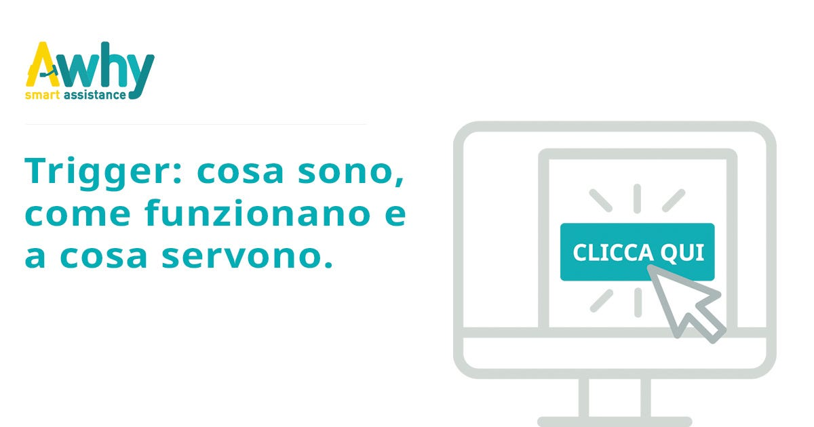

Trigger: cosa sono, come funzionano e a cosa servono.

Nel mondo del marketing ideale niente sarebbe più desiderabile che poter inviare il messaggio giusto, al momento giusto, all’utente che è in cerca di qualcosa su una specifica pagina internet: questo è quello che però, nel mondo reale, è in grado di fare un trigger.
Questo tipo di obiettivo richiede una profonda conoscenza del comportamento degli utenti e la capacità di costruire campagne marketing che si adattino perfettamente alle loro esigenze.
In realtà esiste già un modo per fare questo, ed è l’utilizzo dei triggers.
Ma che cos’è un trigger e come funziona?
Un trigger è, tecnicamente, un evento che si scatena al verificarsi di una determinata condizione che tenga conto di tre fattori principali: tempo, luogo e sequenza.
Dato che si tratta di uno strumento informatico, per tempo intenderemo il tempo di permanenza dell’utente, per luogo la pagina specifica su cui l’utente si trova, per sequenza, invece, il susseguirsi di azioni specifiche che l’utente compie in una determinata pagina ed in un determinato arco di tempo.
In realtà, il fattore tempo può essere soggetto ad infinite variabili: è infatti possibile che un trigger specifico scatti non soltanto perché un utente è rimasto su una pagina, ad esempio, per un arco di tempo superiore ai 20 secondi, ma anche perché oltre ad aver superato il tempo minimo richiesto per la sua attivazione, l’utente ha visitato quella pagina specifica in un determinato arco temporale all’interno di una giornata oppure proprio in una giornata specifica, come ad esempio il giorno di Natale, il giorno del ringraziamento, il Black Friday o l’Epifania.
Che cosa può fare un trigger nello specifico?
Un trigger può aprire una finestra di dialogo in cui è possibile inserire un vasto numero di contenuti: dal testo alle immagini, dai link esterni ai video, è possibile davvero sbizzarrirsi con la fantasia per scegliere cosa mostrare agli utenti in modo da convertirli in clienti aumentando il livello di engagement.
– mostrare offerte relative agli articoli
– suggerire approfondimenti sul post di un blog
– redirect a pagine correlate
– approfondire argomenti trattati nella pagina
– chiedere l’iscrizione alla newsletter agli utenti
– chiedere la compilazione di un contact form
– attivarsi durante una conversazione a seguito di una specifica domanda
In che modo è possibile sfruttare al meglio un trigger?
1. Come saluto iniziale agli utenti.
Iniziamo dall’uso più comune che si può fare del trigger, ovvero il saluto automatico.
Questo tipo di trigger è il più semplice da implementare ma è comunque una formula testata e comprovata per aumentare le conversioni.
Adattare i messaggi alle esigenze dei potenziali clienti è uno dei modi migliori per far si che aumenti il livello di curiosità sul prodotto.
2. Come strumento di coinvolgimento dei clienti durante la fase di processo decisionale.
I saluti iniziali sono un buon inizio, ma ci sono modi più efficaci di coinvolgere i clienti.
La chiave per creare i trigger più efficaci è conoscere e comprendere il comportamento dei proprio clienti: ad esempio, se un utente spende molto tempo su una sola pagina del sito, c’è la possibilità che qualcosa non sia chiaro o che, invece, l’argomento lo interessi molto e sia propenso alla conversione.
Siamo in grado di utilizzare queste informazioni per configurare dei triggers contenenti messaggi su misura che coinvolgano i clienti a seconda della pagina di permanenza, per chiarire dubbi o aiutare la conversione.
Controllando, ad esempio, che il visitatore sia sulla pagina di un prodotto specifico per più di 30 secondi e interpretando questo dato come la ricerca di ulteriori informazioni e una dimostrazione di interesse, potrebbe aprirsi la chat con un trigger che fornisca le informazioni necessarie per indurre all’acquisto.
3. Come equivalente digitale del volantino.
Immaginate qualcuno che arrivi nel vostro negozio con in mano un volantino delle promozioni e offerte: il trigger può essere proprio l’equivalente digitale del volantino.
I trigger possono essere utilizzati anche per tracciare i clienti che arrivano su un sito specifico tramite la ricerca a pagamento o anche organica, ad esempio utilizzando uno strumento come Piwik.
Questo richiederebbe una impostazione particolare ma che vale sicuramente la pena avere.
Sapere, infatti, cosa gli utenti hanno visto prima di scegliere di arrivare su un sito aiuta a personalizzare l’approccio verso il cliente stesso.
Per implementare questo trigger è necessario identificare gli utenti in arrivo tramite degli URL con UTM, quindi con alta tracciabilità, che permettano di verificare la sorgente del traffico. Un esempio di questo tipo di tracciamento può essere quello messo in atto da Google Adwords: tutte le visite provenienti da Adwords hanno infatti una sorgente di provenienza definita.
4. Soddisfare le richieste degli utenti.
Se avete già molto traffico sul vostro sito e consequenzialmente un alto numero di richieste e di chat attive, il miglior metodo di copertura sarebbe quello di associare alla live chat una chatbot in grado di gestire autonomamente le richieste più semplici e comuni, ovvero le cosiddette FAQ, degli utenti.
Proprio nella chatbot è infatti possibile impostare un set di trigger che rispondano ad alcune delle domande basilari che gli utenti solitamente pongono. In questo modo il il trigger verrebbe percepito dall’utente come un alto livello di personalizzazione dell’interazione che sta avendo con l’azienda, e quindi come uno strumento valido di Customer Acquisition.
Qualunque sia l’uso pratico che si sceglie di fare del trigger, lo scopo finale rimarrà sempre colpire l’utente e convertirlo in cliente. E, se di cliente già si tratta, aumentare la sua fidelizzazione al brand nel tempo.
Sono effettivamente infiniti gli usi che è possibile impostare dei trigger, limitati solo dalla creatività del singolo e dalla sua voglia di sperimentare.
La chatbot di Awhy include i trigger tra le sue funzionalità principali: come strumento di marketing è infatti in grado di coinvolgere l’utente in una esperienza a 360 gradi all’interno del sito.
Vuoi provare i triggers e le loro molteplici funzioni? Prova Awhy.
Roberta Gallo